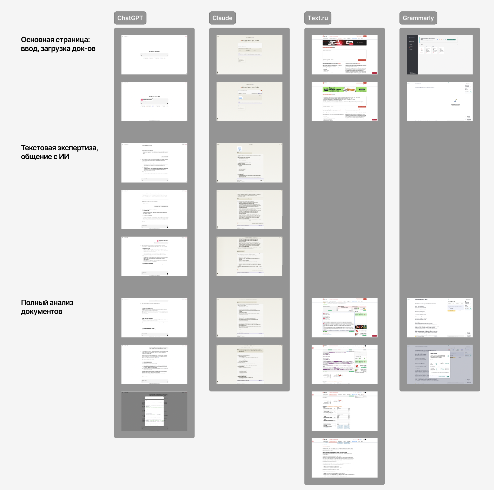
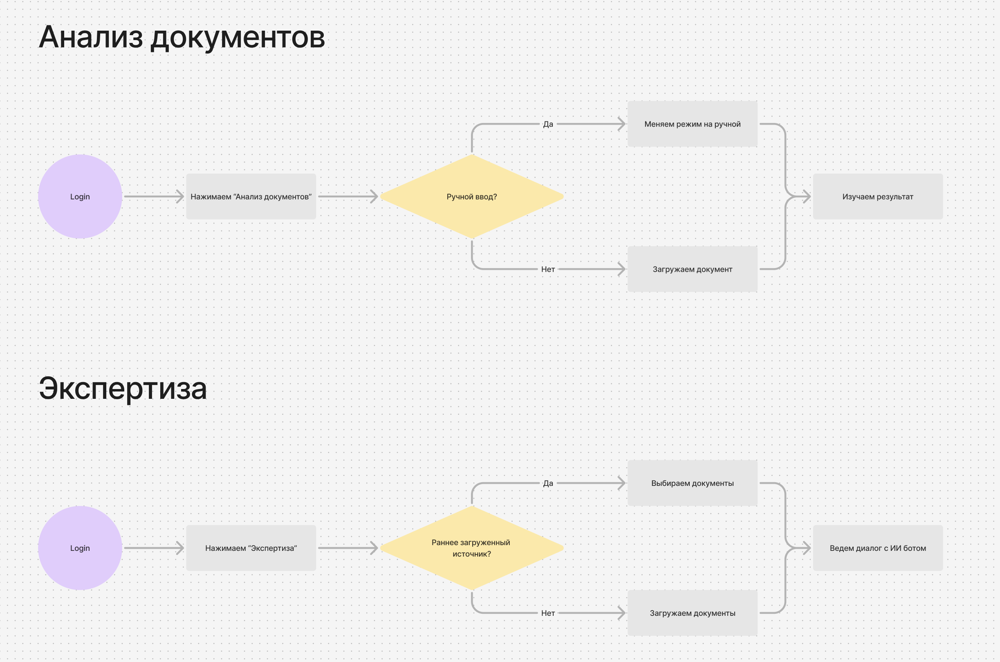
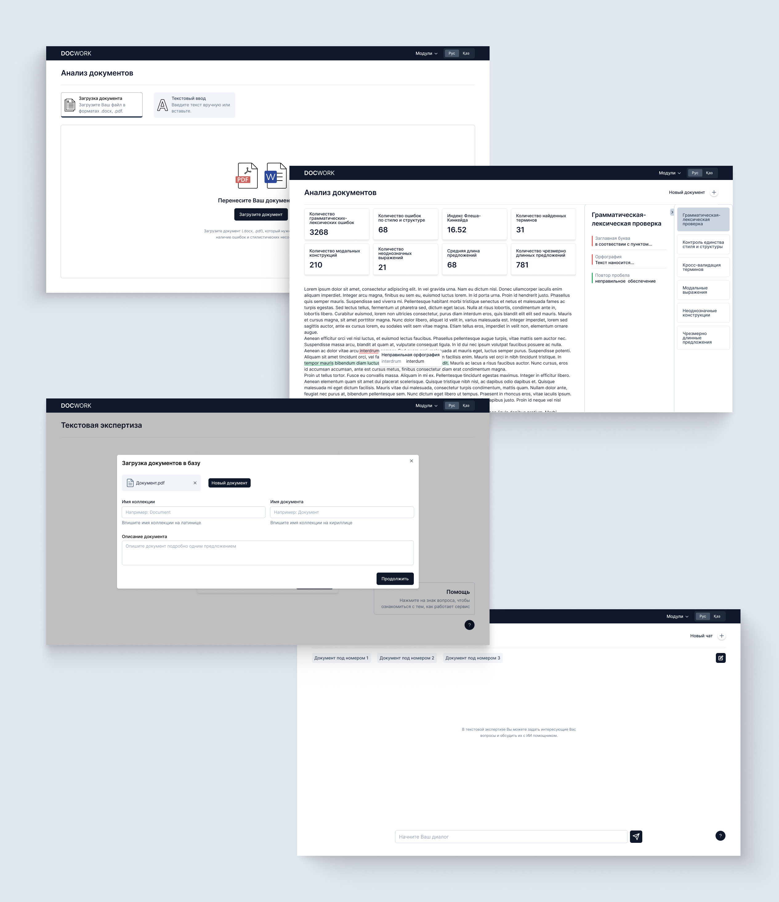
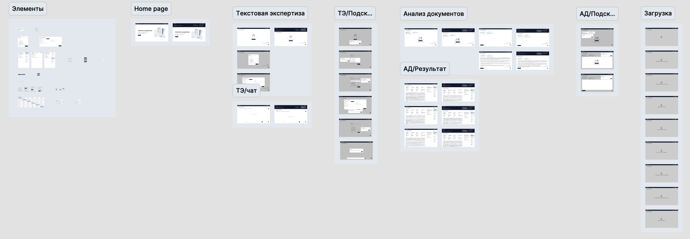

Контекст и роль
Заказчик — компания, в которой юристы и аналитики каждый день работают с большим количеством документов. Их нужно проверять на ошибки, следить, чтобы стиль и термины были едины, и искать в них ответы на рабочие вопросы. Всё это делали вручную.
Мы делали для них закрытую платформу из двух частей: одна проверяет документы, вторая — ИИ-ассистент, которому можно задавать вопросы по загруженным файлам. Дизайнером в команде был только я, так что всё, что касается интерфейса, было на мне: от встреч с заказчиком до макетов и общения с разработчиками.
Проблема
Проверять большой документ вручную долго и скучно. Глаз замыливается, ошибки проскакивают, а несостыковки в терминах находишь только со второго или третьего прочтения. А если ответ нужно найти сразу в нескольких документах, времени уходит ещё больше.
Готовые сервисы закрывали только часть задачи. Проверка текста ловит орфографию, но ничего не знает о терминах компании. Чат-боты отвечают на вопросы, но нормального разбора документа не дают, да и для закрытых документов компании они не подходят.
Чтобы сотрудник тратил меньше времени на проверку и поиск ответов, но при этом понимал, где система нашла ошибку и почему.
Исследование
Конкурентный анализ
Я посмотрел, как с похожими задачами справляются ChatGPT, Claude, Text.ru и Grammarly: как загружается документ, как устроен диалог с ИИ и как выглядит полный разбор текста. У чат-ботов с вопросами всё хорошо, но разбор они выдают сплошной простынёй. Сервисы проверки, наоборот, наглядно подсвечивают ошибки, но спросить у них ничего нельзя. Нам нужно было совместить оба подхода.

Интервью с заказчиком
Мы с CEO нашей компании ходили на встречу с заказчиком. Я хотел понять, как у них сейчас устроена работа с документами и что мешает больше всего. Вот что они попросили и что из этого получилось в интерфейсе:
Структура продукта
Продукт состоит из двух модулей. В «Анализе документов» смотришь, что не так с текстом, в «Текстовой экспертизе» задаёшь вопросы по содержанию. Я специально не стал собирать всё на одном экране: пользователь сразу выбирает, что ему нужно, и не ищет нужную кнопку среди десятка других.

Ключевые решения
Файл или кусок текста
Обычно документ просто загружают в .docx или .pdf. Но на встрече выяснилось, что часто проверить нужно только один раздел, и делать ради него отдельный файл неудобно. Поэтому рядом с загрузкой появилась вкладка «Текстовый ввод»: вставляешь кусок текста и получаешь тот же анализ.
Результат анализа в три уровня
На большой документ анализ выдаёт сотни замечаний, и читать их списком невозможно. Я разделил результат на три части. Сверху сводка из 8 метрик: сколько ошибок, индекс читаемости Флеша — Кинкейда, средняя длина предложений и так далее. По ней сразу видно, в каком состоянии документ. В центре сам текст с подсветкой: наводишь на ошибку и видишь, что с ней не так и как исправить. Справа 6 типов проверок, можно выбрать один и разбираться только с ним.
Ассистент работает с базой документов
Сотрудники часто спрашивают о том, что раскидано по нескольким документам. Поэтому в «Текстовой экспертизе» документы сначала загружаются в общую базу, и каждому даёшь название и короткое описание. А в чате видно, по каким документам ты сейчас спрашиваешь.
Загрузка и подсказки
Анализ большого документа идёт не мгновенно, и если в это время на экране пусто, кажется, что всё зависло. Я нарисовал отдельные состояния загрузки, чтобы было видно, что работа идёт. А после первой версии мы добавили в каждый модуль кнопку «Помощь» с коротким туром. Об этом попросил заказчик: люди у них часто приходят и уходят, и новичок должен разобраться в платформе сам, без помощи коллег.

Ограничения и команда
Сложнее всего было с ИИ. Как модель анализирует текст, решал не я, поэтому любую идею я сначала обсуждал с ML- и бэкенд-разработчиками: умеет ли модель это на самом деле, сколько придётся ждать ответа, какие данные она вернёт. Иначе легко нарисовать то, что потом никто не сможет сделать.
Ещё были сжатые сроки, а фронтенд-разработчик у нас был один. Чтобы ему не пришлось собирать каждый компонент с нуля, мы взяли библиотеку shadcn/ui, и в Figma я собрал элементы под неё. Макеты разложил по модулям и состояниям (главная, экспертиза, анализ, подсказки, загрузка), чтобы разработчикам было удобно забирать экраны по частям.

Работали по кругу: согласовывали макет с заказчиком, отдавали в разработку, дорабатывали. Все задачи и согласования жили в ClickUp.
Результаты
- Первые два модуля, «Анализ документов» и «Текстовая экспертиза», вошли в первый этап и переданы заказчику.
- После MVP заказчик погонял платформу у себя и вернулся с небольшими правками по тому, что должен показывать анализ.
- По их же просьбе в каждый модуль добавили тур по интерфейсу для новых сотрудников.
Точных цифр у меня, к сожалению, нет. Платформа закрытая, работает только внутри компании, и доступа к аналитике у нас не было. Но работать с документами стало проще: ошибки находятся быстрее, и за ответом больше не нужно листать файлы, можно спросить ассистента.
Что бы я сделал дальше
- Посчитал бы эффект. Сколько времени уходило на проверку одного документа до платформы и сколько сейчас, и как часто сотрудники соглашаются с замечаниями.
- Добавил бы ссылки на источник в ответах ассистента. Если по ответу принимают решение, хочется видеть, из какого документа и раздела он взят.
- Сделал бы массовые действия с замечаниями. Например, одной кнопкой принять все исправления одного типа.